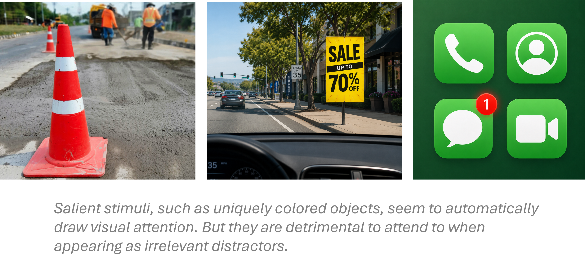
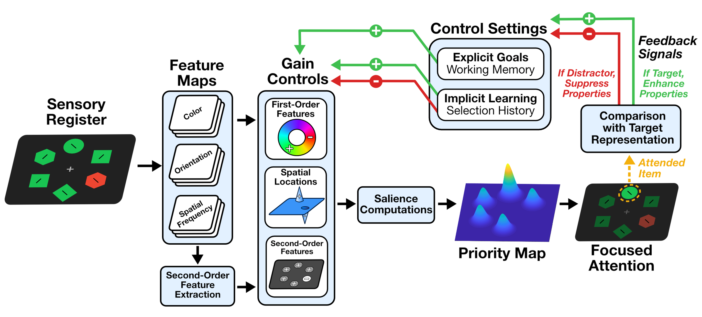

Attentional Suppression of Distracting Stimuli
An important question in distractor suppression is where its limits lie. Initial theories of suppression suggested that only distractors with known colors or spatial locations can be ignored, implying that the brain’s ability to filter distractors relies on foreknowledge of their features. Yet this leads to a conundrum: in everyday life, we often must resist distractions that are entirely new or unpredictable. This observation led me to ask whether suppression can operate not on specific features, but on higher-order salience contrast—the degree to which something stands out in its background. To address this, I developed a new paradigm to encourage salience-based suppression (also called second-order suppression; Ma & Abrams, 2023a, J Exp Psychol Hum Percept Perform; 2023b, Atten Percept Psychophys). Using this approach, I demonstrated for the first time that people can ignore salient distractors without knowing their features or locations. These findings highlight the flexibility of the visual system and its capacity to adaptively filter unpredictable information in complex environments.

Strategic Control of Attention to Prevent Distraction
I investigated how the breadth of attentional focus (also called the attentional window) influences susceptibility to distraction. Some theorists argued that capture depends on an object’s relation to the attentional window—inside captures, outside is ignored (Theeuwes, 2023). However, I find this framework dismisses the role of active control. To disentangle attentional spread and distractibility, I collaborated with Dr. Steven J. Luck at UC Davis and invented a novel task that measured ERP indices of capture (the N2pc component) for salient distractors positioned inside or outside the attentional window (Ma, Luck, & Gaspelin, 2026, J Cog Neuro; Ma & Abrams, 2026, Atten Percept Psychophys; Ma & Gaspelin, in prep). The results refuted the view that capture is passively due to attentional enclosure. These works suggest that active attentional control can override passive odds of distractibility.

Improving Metrics of Attentional Allocation
The magnitude of distractor inhibition can be assessed through various methods. While eye-tracking and ERP components provide unbiased measures of capture and suppression, behavioral measures often rely on participant self-report and have faced questions about objectivity. To address this, I developed a novel technique that provided objective measures, while remaining purely behavioral and avoiding the technical demands of specialized equipment (Ma & Abrams, 2025, Cognition). Through this project, I developed novel tools that expand the methodological approaches available to attention researchers.

Theoretical Review of Attentional Capture and Suppression
In addition to empirical work, I contribute to theoretical synthesis on attentional capture and suppression. Our recent review, Signal Suppression 2.0, integrates a decade of findings and updates the signal suppression account to provide a broader framework for understanding how attentional control prevents distraction.
